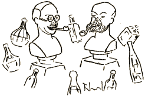

(*) Prononcu Verlen'.
„ Kiam la poeto Paul Verlaine estis senmona kaj tamen soifa, la kelneroj en la latina kvartalo akceptis porpage ĵus verkitan versaĵon, kiun ili facile povis vendi al inteligentaj eldonistoj. “
La vivo, ĉi giganta, enigma karusel',
Sencelan bardon portis laŭ centrifuga rondo,
Sed ĉie, en Parizo, Londono aŭ Brusel'
Vi ĉiam vin retrovis mizera vagabondo
Kaj tamen simpatia. ― Perversa, eĉ vulgara,
Aŭ foje tro plorema sub niĉo de madon',
Vi restos al mi kara, kaj via verko kara,
Des pli, ke ĝi ekzistas ja nur en luks-eldon'.
Ĉe bordo de l' Mozelo, en ŝirmo de arbust'
El lunpejzaĝo, kian vi sorĉe melodiis,
Leviĝas kiel faŭno observe via bust',
Kaj tie, samurbano, mi ofte vin enviis...
* * *
Se krom la naskiĝurbo mi ion ajn komune
Kun vi posedas, certe, ne estas la talent',
Sed laŭ vidpunkto de la ... soifo, eble kune
Ni estus bela paro en nia element'!

Kaj tial mi envias vin, ho poet-drinkant',
Ĉar dum vivtempo via kelneroj poezion
Ankoraŭ alte taksis, kaj kelklinia kant'
Sufiĉis por kvitanci plej pezan adicion.
Nu, provu do hodiaŭ porpage lasi odon
Dirante al kelnero: „ Sistemo de Verlaine! “
Rikane li pretendos ne koni la metodon
Kaj diros banalaĵon kun rido de balen'...